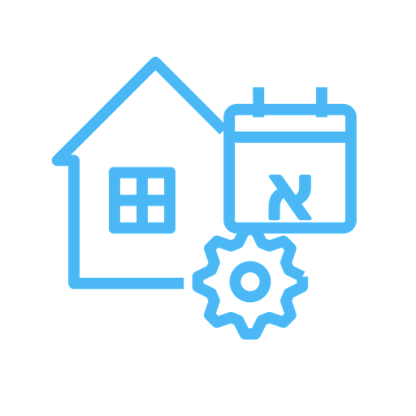
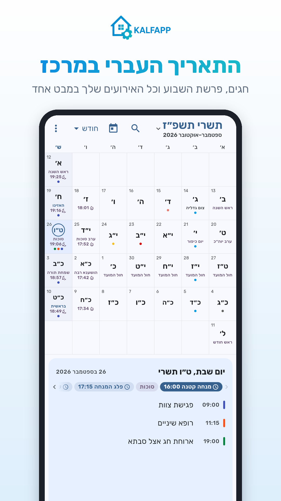
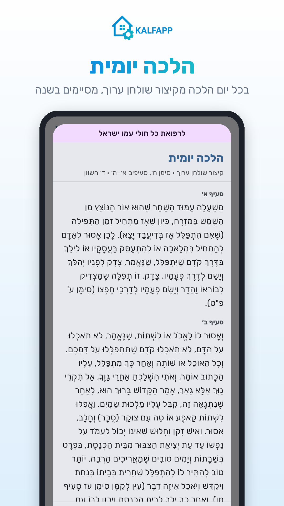
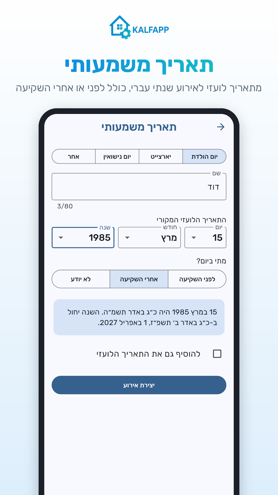

לוח עברי
היומן שבו התאריך העברי במרכז
להורדה מ-Google Play


לוח עברי נועד למי שחי לפי התאריך העברי. יום הולדת עברי, אזכרה או יום נישואין קובעים פעם אחת, והאירוע יופיע במקום הנכון בכל שנה, גם בשנה מעוברת. בלי חישובים ובלי לחפש בלוח שנה מודפס.
יומן לפי הלוח העברי
חודש, שבוע, יום ואג'נדה, עם התאריך העברי והלועזי זה לצד זה, ואפשר גם תצוגה לפי החודשים הלועזיים.
חגים ופרשת השבוע
חגים, צומות, ראשי חודשים וימים לאומיים, לפי לוח ארץ ישראל או חו"ל.
חוזר לפי התאריך העברי
חזרה שנתית, חודשית, שבועית או יומית, כולל בחירה באדר א' או אדר ב'.
תאריך משמעותי
מכניסים תאריך לידה, פטירה או נישואין לועזי, ומקבלים אירוע שנתי בתאריך העברי, כולל לפני או אחרי השקיעה.
זמני היום ושבת
זריחה, סוף זמן קריאת שמע, שקיעה וצאת הכוכבים, והדלקת נרות לפי מנהג העיר.
הלכה יומית
בכניסה הראשונה בכל יום, ההלכה של היום מקיצור שולחן ערוך. מסיימים את כל הקיצור בשנה.
סנכרון עם Google Calendar
בשני הכיוונים: מה שנוצר כאן מופיע ב-Google, ולהפך.
תזכורות ומשתתפים
התראה לפני כל אירוע, הזמנת משתתפים במייל דרך Google, ומספרים, מיילים וקישורים לחיצים.
פרטיות
הנתונים שלך שמורים בחשבון שלך בלבד. בלי פרסומות ובלי מעקב.
אודות
לוח עברי הוא חלק ממשפחת האפליקציות של KALFAPP, פרויקט התנדבותי של אפליקציות קטנות ופשוטות לחיי היום-יום. יש לך רעיון לשיפור? נשמח לשמוע: natanor.kalfa@gmail.com
Hebrew Calendar
Hebrew Calendar is an Android calendar built on the Hebrew (Jewish) date: holidays and the weekly Torah portion, events that repeat by the Hebrew date (birthdays, yahrzeits, anniversaries, with the right Adar in leap years), the times of day and Shabbat, a daily Kitzur Shulchan Aruch reading, reminders, and two-way sync with Google Calendar. It is part of KALFAPP, a volunteer project of small, simple apps. Privacy policy · Contact